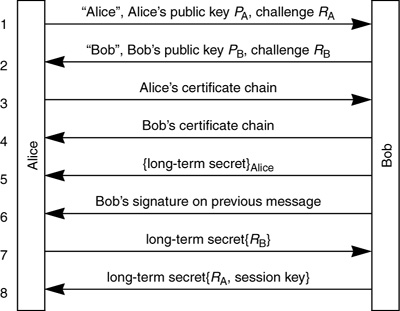

Networking Security Networking Security Networking Security Security Networking Security Networking Security Networking Charlie Kaufman Radia Perlman Mike Speciner Prentice Hall Network Security: Private Communication in a Public World, Second Edition
24.5. Lotus Notes Security
Lotus Notes has a security system without a cute name, or really any name at all. Lotus Notes was developed by a company called Iris Associates, which was acquired by Lotus (the name was changed to Lotus Notes after the acquisition, not due to some amazing coincidence). Later Lotus was assimilated by IBM, who changed the name of the server end of the product to Lotus Domino.
The first three versions had the clever names version 1, version 2, and version 3. In the first edition of this book, we boldly speculated that the version they were working on at the time would be called version 4. But we were wrong. The next two versions were called R4 and R5 (where R stands for "release"). Apparently there is some subtle marketing distinction between a version and a release. The next version about to be released as of the writing of this book is called "release 6", and the marketeers have sternly said that it is NOT to be called R6. While the security has evolved over the yearsÂin particular the adding of S/MIME and SSL support for interoperation with other productsÂthe Notes proprietary public key infrastructure (they prefer to call it pre-standard) has remained substantially the same.
Like the other systems we've discussed, Lotus Notes security provides for mutual authentication and establishment of a shared session key. It also provides for electronic mail security and for digitally signing active content. It is public key based, though just like all security systems, it uses public keys in conjunction with secret keys for encryption. The algorithms it uses are RSA, MD2, RC2, and RC4 (see glossary).
24.5.1. ID Files
An ID file contains the sort of user-specific security information that most other deployed schemes store in a directory service. Lotus Notes security assumes that a user Alice will carry her ID file on a floppy or smart card, or have it stored in nonvolatile memory on her workstation. Because an ID file might be stolen or lost, the ID file is encrypted with Alice's password.
There are interesting trade-offs between the ID file scheme and a directory service based scheme. The advantages of storing the user's security information in a directory service are:
It is more convenient. If ID files are kept on floppies or smart cards, users have to carry something around, and if they lose it or forget it they can't log into the network. If ID files are kept on a workstation, then the user is restricted to using that workstation. It is possible to store a given user's ID file on more than one workstation, but it becomes infeasible in some environments to maintain a user's ID file on every possible workstation that that user might use. And operations like password changes become very awkward. It might be more secure. A directory service based scheme, if properly designed, can make it difficult for an intruder to capture a quantity with which to do password guessing. If an ID file is on a floppy, someone who steals the floppy can do an off-line password-guessing attack. If the ID file is stored on a workstation, anyone who can physically access the workstation can read out the information and do off-line guessing. In the case of a smart card, however, it is possible to design a smart card that will refuse to divulge its contents, and which will limit the number of password guesses by disabling itself after too many incorrect guesses. In release 6, Lotus Notes offers the option of storing the ID file on a server and accessing it with a protocol similar to the ones in §12.4 Strong Password Credentials Download Protocols.
The advantages of the ID file scheme are:
It might be more secure, because it provides "two-factor authentication", based on both what you have and what you know. It requires less of the network to be operational. Sometimes the environment is quite primitive, such as when the network itself is mostly broken and you need security for network management in order to fix the network, or when directory service replicas need to authenticate one another, or when a bunch of people with laptops show up at a meeting and want to form a private little network. It might be more secure because someone who had physical access to a directory service replica could read the directory service database and do off-line password guessing. With ID files, very careful users can keep their information out of the enemy's hands, whereas with a directory service solution, the users have to trust someone else to protect the directory service replicas.
Lotus Notes security does depend on the directory service for encrypting mail, finding cross certificates, and revoking certificates, but basic authentication and signature verification works even if the directory service is unavailable.
24.5.2. Coping with Export Controls
It is amusing to see what lengths Lotus had to go to in order to satisfy export criteria, and yet provide reasonable security where legal. Each user has two RSA key pairs, a long one and a short one. Bulk encryption, as you'd expect, is done using secret key cryptography. Again, to satisfy the export rules at the time Lotus asked for a license, there were two key lengths for secret keys, a short one (on the order of 40 bits) and a long one (on the order of 64 bits). The long keys were used within the U.S. and Canada. The short ones were used for encryption when (at least) one of the participants was outside the U.S. and Canada. As export controls changed, successively larger keys were permitted, but the need for backward compatibility forced negotiation among a large number of different sizes.
In R4, they introduced a particularly baroque mechanism for coping with export. At the time, the U.S. government was pushing Key Escrow (see §24.9 Clipper) as the solution that would allow people to be secure against anyone but them. But this idea was extremely unpopular. Lotus was faced with the difficult decision of continuing with 40 bit keys (which people had publicly broken and were not considered trustworthy) or developing a Key Escrow system (which everyone hated). They came up with a novel compromise. They used long secret keys both inside and outside the U.S., but when one of the parties of a communication was outside the U.S., they encrypted all but 40 bits of the key using a public key provided to them by the NSA, and included that encrypted blob in the message header. That way, customers outside the U.S. got 40 bits of protection from the NSA (the maximum allowed at the time) and good protection from everyone else (including the people who were demonstrating the weakness of 40 bit keys). They announced this compromise with great fanfare and press releases, but the feature went largely unnoticed. Ironically, years later the feature led to a scandal when a Swedish newspaper "discovered" (in the documentation) that the NSA had a secret back door in the product, and criticized Lotus for cooperating with Big Brother.
In R5, export controls were relaxed sufficiently that they could use the same encryption worldwide. But to this day, they have long and short RSA keys for interoperation with old versions.
In Lotus Notes electronic mail, as in PGP, PEM, and S/MIME, public keys are used for authentication and for encryption of per-session secret keys that are used for message encryption. To satisfy export criteria, if either participant is outside the U.S., a short secret per-message key is used. And it is encrypted with the short public key. But the signature on the message is computed using the sender's long public key, whether or not the participants are within the U.S. This means that the signature on the message is secure even against an adversary capable of breaking the shorter RSA keys and secret keys used for encrypting the message.
It isn't clear why the export control people insisted on requiring use of a short public key to encrypt a short secret key. If they can break short RSA keys, then they can extract the secret key, no matter how long, providing it is encrypted with a short RSA key. And if they can break short (40-bit) secret keys, they can decrypt any message encrypted with a short key even if that key is encrypted with a long RSA key.
24.5.3. Certificates for Hierarchical Names
The Lotus Notes public key infrastructure is fairly straightforward and resembles the model described in §15.3.8 Bottom-Up with Name Constraints. A user is given a certificate by the CA responsible for that portion of the naming hierarchy. (Actually, the user has two certificates, one for a long key and one for a short key, but we'll ignore that in our discussion.) There's a chain of certificates from the root of the organization down to the user, and every user and server stores that chain in its ID file. The user presents that chain when authenticating (see §24.5.5 Lotus Notes Authentication). In order to authenticate Alice, Bob needs the chain of certificates from a common ancestor of Alice and Bob down to Alice.
But there may not be a common ancestor. The name tree for Alice may be disjoint from the name tree for Bob. For instance, they might be in different companies, and there may be no common root level with a CA jointly managed by the two companies. In this case, the only way for Bob to authenticate Alice is through a cross certificate. Some ancestor of Bob has to have created a certificate for some ancestor of Alice.
Cross certificates are stored in the directory service. When Bob wants to authenticate Alice, he searches the directory service for a cross certificate from one of his ancestors to one of Alice's ancestors. If no such cross certificate exists, then Bob and Alice cannot authenticate. In any case in which Bob needs a cross certificate for Alice, Alice will likewise need to find a cross certificate for Bob in her directory service. If Alice is a human at a workstation when Lotus Notes discovers the need for a cross certificate, it will prompt with the name and public key of the organization and invite Alice to create a personal cross certificate to that organization. In practice, most users create the cross certificate without checking the public key or even understanding what the message means. The resultant security is still better than nothing, because the cross certificate can only be used to authenticate entities in the particular remote organization and Alice will be warned if she ever connects to a server from that organization that presents a different public key.
In other systems, like DASS, each CA in the naming hierarchy issues an up certificate for its parent CA, in addition to issuing down certificates for each of its child CAs. These certificates are stored in the corresponding directory. The DASS scheme is actually more convenient in the case where the key of a CA changes. With the DASS scheme, all that is necessary is for each child CA of the changed CA to reissue its up certificate, and the parent CA of the changed CA to issue a new down certificate. With the Lotus Notes scheme, if the key of a CA high up in the name space changes, a change has to be made to the ID file of each user. There is currently no automated method of doing this. On the other hand, the Lotus scheme has a lesser dependence on the directory service and can therefore be used when more network components are not functioning.
24.5.4. Certificates for Flat Names
In versions 1 and 2 of Lotus Notes, and maintained since for backward compatibility, they had a system of Flat Names (people's names were just their names, and could not be assumed unique between organizations and perhaps not even within organizations). We describe them here because they represent another interesting way to construct a PKI. With hierarchical names, it's fairly easy to choose a chain of certificates that authenticates Alice to Bob, assuming the CA hierarchy follows the naming hierarchy. Flat names, by definition, don't have any structure. With flat names we could assume (like PGP) that applications will somehow find an appropriate chain of certificates. The flat-name version of Lotus Notes does not use chains of certificates. Instead, Alice is responsible for obtaining certificates for herself from different CAs. If she has enough certificates from enough different CAs, then when she attempts to communicate with Bob, it is likely she'll have a certificate from a CA that Bob knows and trusts. Lotus certificates aren't X.509-encoded, but they contain basically the same information. In the flat name version, Alice starts out having one certificate, created by the administrator that created her account and ID file, and then she obtains other certificates as needed. In a small organization, there might only be a single CA.
The non-hierarchical version of Lotus Notes assumes there may be numerous CAs, and each has been configured to know some of the other CAs' public keys. If Alice has a certificate from CA1, she can obtain a certificate from CA2 if CA2 has been configured with a public key for CA1 and if Bob, the human who is managing CA2, decides he wants to give Alice a certificate. The semi-automated method for Alice to get a certificate is to send a signed message to Bob asking him to give her a certificate. The signed message contains all of Alice's certificates. The mail program verifies Alice's signature and informs Bob of the list of CAs that have vouched for Alice's public key. Bob makes a policy decision based on Alice's name and the CA names. In particular, he must make sure that he has not already created a certificate for a different person whose name also happens to be Alice, and that no one is likely to confuse this Alice with some other one. If he thinks Alice's name is reasonable, and he trusts at least one of the CAs from which Alice has a certificate, he creates and mails back a certificate with Alice's name and public key signed by CA2.
In this way Alice collects a bunch of certificates from some set of CAs. Lotus allows Alice to specify, for the CA corresponding to each of her certificates, whether Alice trusts that CA or not. If Alice marks a CA as being untrustworthy, then she will not necessarily believe a certificate signed by that CA. But even if she personally has nothing but contempt for some CA, say CAd, she might need a certificate from CAd in order to communicate with someone who does respect CAd.
When two things, say Alice and Bob, authenticate, they each send the other a list of CAs they'll trust, and then each of them (hopefully) finds a certificate the other will believe and sends it to the other. For example, say Alice has certificates from CA1, CA2, and CA3, and marks CA2 and CA3 as trusted. Suppose Bob has certificates from CA1, CA2, and CA4, and marks CA1 and CA4 as trusted. Early in the authentication handshake, Alice sends the list of CAs she trusts, namely {CA2, CA3} to Bob, and Bob sends {CA1, CA4} to Alice. Alice has a certificate Bob will believe, namely the one signed by CA1, so she sends that one to Bob. Bob also happens to have a certificate Alice will believe, the one from CA2, and he sends that certificate to Alice.
It might have been nice to allow Alice to maintain a list of CAs she trusts rather than having the trust information be a flag on certificates, since then Alice could accept certificates from a CA that hasn't granted Alice a certificate.
24.5.5. Lotus Notes Authentication
The authentication handshake in Lotus Notes is similar to DASS, in that it allows caching of state from one connection to another. If both parties have cached the state, they can eliminate the step where they exchange and verify certificates.

In the first two messages, Alice and Bob tell each other their public keys and give each other a challenge. In the next two messages, Alice and Bob send each other their certificate chains, starting from their organizational root (or, in the flat name case, there are an extra two messages where Alice and Bob exchange the names of CAs they trust). In messages 5 and 6, Bob sends Alice their long-term shared secret, encrypted with Alice's public key (to foil eavesdroppers) and signed with Bob's private key, to prove it's Bob sending the message (Alice takes Bob's word for it on their shared secret key).
There's a clever performance reason why messages 5 and 6 are sent as two messages rather than having Bob send the signed encrypted long-term secret as one quantity. The reason is to allow the computation-intensive private key operations, the one where Alice decrypts the long-term secret and the one in which Bob signs the encrypted long-term secret, to proceed in parallel. Remember that RSA public key operations can be made faster than private key operations by using a small public exponent (§6.3.4.3 Having a Small Constant e).
In message 7, Alice proves her identity. She needed to know her private key in order to extract the long-term secret, which she then uses to encrypt Bob's challenge.
In message 8, Bob proves his identity and securely sends Alice a session key they will share for this one conversation.
The reason Alice and Bob send the unsigned public keys in the beginning is for performance reasons. If the parties have, on a previous connection, exchanged and verified each other's certificates, then the step of exchanging and verifying the certificates can be skipped. In the case where they've maintained state, messages 3 through 6 are skipped.
Note that some of these messages might be longer than a single packet. The authentication handshake is actually implemented on top of a reliable transport layer protocol, so it is possible for any of the messages in the handshake to consist of multiple physical packets.
24.5.6. The Authentication Long-Term Secret
In a DASS authentication, both Alice and Bob may retain a cache, and if they remember information from a previous Alice-Bob exchange, they can save themselves some processing. The Lotus scheme as we described it in the previous section would seem to have the same property. However, the Lotus scheme is even more clever, since Bob does not need to keep any state!
Note that in message 5, Bob chooses the long-term secret and sends it to Alice encrypted with Alice's public key. The clever idea (devised by Al Eldridge, who designed Lotus Notes security) is that Bob does not choose a random number for the long-term secret, but rather computes it as a cryptographic hash of Alice's name and a secret known only to Bob. If Alice authenticates a second time, Bob will choose the same long-term secret.
If Alice has cached the long-term secret from a previous authentication, she can skip messages 3 through 6 and send message 7, which is Bob's challenge (from message 2) encrypted with the cached long-term secret. Bob computes the long-term secret based only on Alice's name and his own secret.
Why is this secure? Bob doesn't know what CA, if any, is vouching for Alice. But Bob does know that on some previous exchange he was impressed enough with Alice's certificates that he was willing to tell her a long-term secret.
Bob is allowed to change his own hashing secret and in fact does so periodically for security reasons. If Bob has changed his hashing secret since Alice's previous authentication, then Alice will have the wrong long-term secret. In that case her authentication will fail and she will revert to the unabridged authentication handshake, and this time (assuming Bob still likes her certificates) she'll get the new long-term secret.
Bob only changes his secret about once a month, which means that a server only needs to do one private key operation per user per month to support authentication. This gives it a substantial performance advantage over SSL, which does RSA operations much more frequently. A minor industry has grown up around building RSA accelerators to support SSL servers, but none is necessary with the Lotus Notes design.
24.5.7. Mail
The authentication handshake described in the previous section requires Alice and Bob to be actively communicating with each other. With electronic mail, however, Alice will compose a message to be transmitted to Bob, and Bob will eventually receive the message. He might be completely disconnected from the network at the time Alice composes and transmits the message, so Alice has to be able to accomplish message signing and message encryption without shaking hands with Bob.
Lotus Notes mail allows you to encrypt, sign, both encrypt and sign, or do no cryptographic protection of a message. Alice includes her certificates in any message she signs.
24.5.8. Certification Revocation
Since Alice sends Bob her certificates as part of authentication, certificate revocation is awkward in Lotus Notes security. There is no such thing as a certificate revocation list. Instead, a user's certificate is revoked by removing it from the directory service. The theory is, if Bob is paranoid he can check the directory service to ensure Alice's certificate is there when Alice logs in, or he can remember when he last looked up Alice's certificate so that he doesn't need to do it if he's done it recently. If Bob is not paranoid, he does not need to check the directory service, increasing availability and performance at the expense of security. For Lotus servers, this is a configuration option.
 |